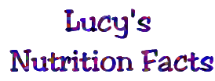

- The object of this game is to try and pick the foods that will make Lucy reach 40 lbs.
- To pick a food, just click on it and it will move to Lucy's dish. To take a food out of Lucy's dish, click on it again.
- Watch the arrow on the scale to see how you are doing. It has three positions: too light, too heavy and just right.
- Every time you play the game will be different!
Weigh In!